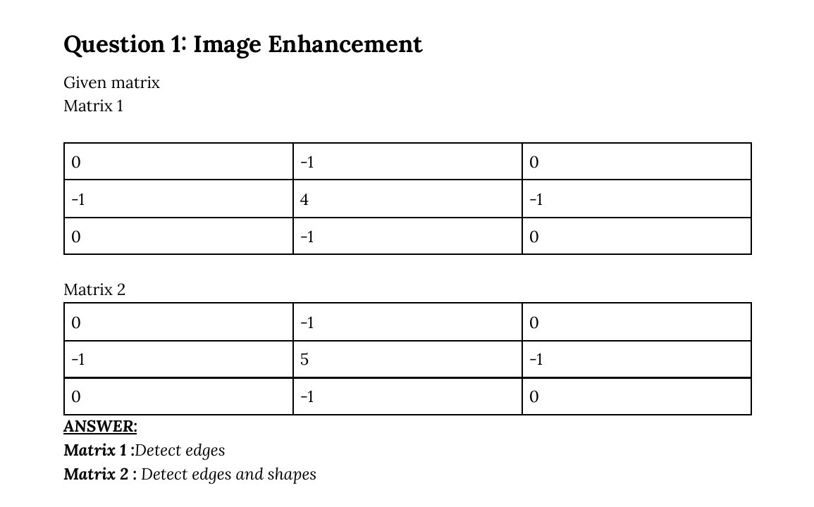

Midterm · Question 1 — Identify what each 3×3 mask does
Question (as printed)

Solution
A mask with corners = 0, four sides = −1, and the centre = a positive number is a Laplacian-family kernel. The size of the centre tells you which one:
- centre = 4 → the Laplacian itself → edge detector.
- centre = 5 (= 4 + 1) → Laplacian + identity → sharpening mask.
- centre = 8 → 8-neighbour Laplacian (the diagonal version).
- centre = 9 → 8-neighbour Laplacian + identity → sharpening (diagonal).
Matrix 1 (centre = 4) → detects edges. It produces a near-zero response in flat regions and a large response wherever the brightness changes.
Matrix 2 (centre = 5) → sharpening, keeps shapes. Think of it as "original image + edges": the +1 added to the centre says "keep everything you had", the rest of the kernel adds the edge map on top.
Matrix 2 (centre = 5) → sharpening, keeps shapes. Think of it as "original image + edges": the +1 added to the centre says "keep everything you had", the rest of the kernel adds the edge map on top.